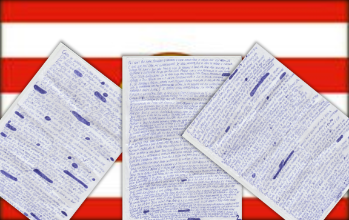

Return
3rd letter to Blumenauans

CHAPTER 1
- Written letter of outburst to edify, so that I may absorb what is written here and gain experience;
- And that other people may be comforted to know that I, Daniell, have been suffering with the same weaknesses of the flesh to which all people are subject.
- My feelings are now anger, a spirit of strife, doubt, sorrow, rancor, fear, greed, and the like.
- I do not settle for foolishness, and that makes me angry when this foolishness comes from my own mother.
- By the Bible, I must obey her in everything.
- Even to write this I will go, for I write under the table so that the servants of Satan do not spy.
- And in this I feel greed for material things:
- With Bitcoin, I would have given my mother money for rent and freight;
- And having some items I could cover the table to be able to write without tiring myself.
CHAPTER 2
- And I am already tired: in body, mind and spirit.
- So tired that sometimes I can not even write (and describe) everything I feel in anguish in these tribulations.
- I can not fall after confessing Christ, but when I see I am disobeying the Holy Bible of God.
- And that two months ago did not happen.
- The foolishness of my mother has impaired my flesh and scandalized me, for I am perplexed by what she has done while the devil tempts her.
- She being willing before to eat certain foods, preventing me from speaking and handling,
- Keeping me from accessing the Internet, not wanting to call her daughter to receive her money, being able to leave here without paying rent and leaving our things in the house.
- And staying quiet with nervous breakdown thinking about bad things or talking too much,
- And doing things that hurt us when we know that there are malicious men filming wanting to twist our words and deeds; all this has made me distressed.
- And even more distressed I feel in knowing that I am sinning.
- I feel like crap; like a little clown toy in the hands of a god.
- I want to die, and how I wish I had the courage to do it myself!
- How I have done the will of the devil and his devils!
- And wrathful to me who doeth this more than I, I have opened yet more spiritual doors unto them.
- Is it because I want to sin or are joking with me?
- Is there anyone making me sin so that I am afraid?
- Is it a grace to serve God out of fear?
- Is it good to subject ourselves to Satan in his "do not taste, do not touch, do not handle"?
- Am I not extinguishing the Spirit when I am gone?
- Fill my spiritual emptiness with the words and deeds of Satan or God?
- Is my mother bad or am I the one who can not speak with more love?
CHAPTER 3
- When we fear or irritate ourselves, love is not properly present.
- When we become distracted by something of this world, we open doors for demons to command us what to say and what to do.
- Again, I repeat: when we have any negative feelings, the devil and demons command us and so we do and we speak what they want.
- And they do it through the flesh, the same that is corrupted on the earth.
- But the Spirit is kind, eternal, and incorruptible.
- Now the devil wants our corruption;
- Therefore he tempts us to bow down to the flesh, and when inclined to the flesh he commands us to do things that are not convenient.
- Are we, therefore, being free and doing our will?
- The will is a feeling, just as love is.
- There is love that is not love, but our will, in fact, is never will.
- The only thing in our being to feel desire, namely, is our soul;
- Who only wants to live in Spirit and in truth, and to be saved.
- In any case, we live in servitude, serving the flesh by "freedom" and "will," or by serving the Spirit out of fear.
- Now in the flesh, liberty and will are false, so that these things are found only in soul and love.
- For what? For love, will we sin and serve the flesh by loving God and believing that he forgives this and that we will be converted at an older age?
- Not at all; for true and complete love begins by: loving God above all things.
- If we love God, we are not afraid of him; but we do not want to grieve for ourselves and / or ourselves.
- But with the new testament of our Lord Jesus Christ, we understand this even more grandly, as the first commandment:
- Thou shalt love thy neighbor as thyself.
- Then we will love ourselves and our neighbor alike.
- And if we love our neighbor, we love ourselves;
- For one who does not love can not love, and one who does not understand can not understand.
- Indeed, if we love one another (as Christ has loved us), we also love our souls.
- And if we love our souls, we will do his will, which is to live in the Spirit and in truth.
CHAPTER 4
- I stopped what I was writing in "and if we love our souls," when a lady begged at the door for her daughter who suffers from cancer, and said she made little money.
- I said we did not even have it for us, and she unquestioningly left.
- Immediately I was troubled in spirit, and called, "Lady!" and she returned.
- I asked her if she believed in God, and she replied that if she was not she would not even be here anymore.
- I asked them if they would accept a prayer, and they accepted it well.
- I told not to trust in me, but in God, and I began the prayer remembering how I am flawed and that at that moment God used me and put his anointing and words on me,
- How he used that colt to say, indeed, to reproduce his words to that people.
- I prayed, and with a little fear, but I overcame the love.
- I thanked God for those two souls, and I remembered now that today I was conscious of two women I saw on the street crying and I did not help.
- I had put fear above love.
- And everything I write is associated with the things I thought, I said, and I wrote today.
- If I had the courage to pray for two strangers (today I spoke about "strangers") and disobey my mother and her love, who instructed me not to speak to such people,
- It was not for my merit or courage, but for the mercy and longsuffering of God that I should cast off the diabolical shyness and fear, for the sake of something higher: love.
- And in the prayer I spoke about my timidity, and that this comes from the devil.
- I hated myself and feared God for not helping two souls, but I loved and thanked God for those souls.
- Therefore, brethren, let not your conscience be troubled by your acts of the past, lest by any means fall from the grace of our Lord Jesus Christ.
- For in grace is love, and in love there is no fear.
- If we possess true and complete love, we are a new creature and better things than the past will do, good things standing out against the bad;
- For the person we are today is better and does not compare with that of before.
- Therefore, brethren, with love I must repeat:
- If you are no longer that person, but a new one (with that Jesus is happy, for you) feel the freedom and confidence of Jesus Christ, the faith that works by love,
- And do not fear and regret your conscience for that which you have already repented, Jesus has already forgiven you and today you do better things to make up for.
- But one thing I say: a lost soul is not made up for, for a single soul is worth more than the whole world, whether it be his soul or that of another.
- And I have failed to succor two souls, and to preach the gospel to double souls. Look how serious it is!
- But I did better than before, as a new creature that I am becoming as I wait to be baptized in the waters and to descend into them my old self,
- And for the love of God and my soul I keep my labor for Christ, in a pure conscience and ready to do good things always.
- I have sinned more than all of you, knowing the value of a soul, but this knowledge was not bound to understanding and love, in Spirit and truth.
- I feared as I began to write this phrase, but God answered and confirmed that I can not weigh my conscience, for the old creature is an old creature, and the new creature is a new creature;
- So is he, and I am I, and the old creature does not disturb the love and faith of the new.
- So what matters today.
- Will we sin today hoping to ask for forgiveness tomorrow?
- Not at all; for the day that Jesus returns is today.
- Love yourself and your neighbor as if it were the last day of the world today.
- And loving your neighbor, these little ones, you are already loving Jesus.
- These things were in my head, but I forgot them.
- I began to write this with laziness, weariness, anger, discouragement, doubt, and other similar feelings,
- But now I write all I want (the will comes from the Spirit) and with high speed, like never before.
- And today I understand one thing, which was very heavy on my conscience: why we came to Blumenau.
- I stopped at "And today I understand" and I fed, and the devil began to blow doubts and saying that I was trapped.
- But God answered me and said that as he made me write in a letter, I can not trust in the appearance of the world, in the affairs of this earth, nor in the appearance of evil.
CHAPTER 5
- As it is written, love does not suspect evil.
- And: the love of Christ constrains us.
- Psalm 119: 116 also asks the Lord not to let us be ashamed of our hope.
- Now we shall be ashamed to hope for a higher being among men in an evil world,
- Or will we be ashamed before this higher being for the glory of men who, like us, live for less than 100 years?
- Let us therefore be constrained and humbled with Christ and his cross, and glorified by our faith which brings us certainties and the love that comforts us.
- Do you look like a clown who speaks to himself and believes in the invisible?
- Does the world mock you and make you think you are working in vain?
- Has the science of this universe confused you?
- There seems to be no one else like you, and you feel like a weirdo?
- Do you seem to diminish while the world seems to grow larger?
- For the appearance of evil and this world persuades us.
- The father of lies, who is cunning and possesses the power of death; this is the prince of this world, and he is the god of this world.
- This world is a test, and in it we men (so I also speak of women) choose to bow to the flesh and fear this temporary world, or ascend to the Spirit and love the God of ages and Father of eternity.
- Now there is a lie in this world:
- Men laugh and show themselves strong but are afraid of dying;
- Men are honest and pious, but they put money above all else;
- Men drink and show themselves to be happy; but they are there for sorrow;
- Men are wise men and teachers of science; but deny the spirituality and madness of the greatest wisdom.
- After writing this, at dinner the devil was angry and wanted to convince me that people thought I did not pray as I should, and I know it,
- But I am not troubled by my faults, nor by what they think of me, but the faith and love of God and his testimonies are my counselors.
CHAPTER 6
- When God touched this in my heart and felt the peace of God, the devil became angry and tempted me by doubts about the existence of God.
- But I thank God for the day when I received a greater science than most men;
- Concerning the existence, the mind of God, his purposes and his love.
- And if I do not understand the fullness of God, I am satisfied and satisfied with it;
- For us, mere men in this world, there is a limit to all things, so that our wisdom also has a limit because it is limited while the wisdom of God is infinite.
- Can we doubt the existence of God because we can not understand it?
- Not at all; for our greatest wisdom is to know that our wisdom is not wisdom, but it is a limited knowledge.
- And part of this wisdom is to know that this world will pass away, but we will be resurrected by faith and love;
- In the grace of Jesus Christ, the Son of God, our Lord, and the first fruits of all creatures.
- And if I failed to do something good, comfort me in knowing that good intention is greater than failure.
- 03/18/2018
- Now everything that is physical, finite, and flawed comes from him who is spiritual, infinite, and perfect.
- She is.
- For what is she?
- Whether we call it God, Father, Creator, Lord, Universe, Master; or interpret it as another god, it remains what it is.
- She is what she is, she is the I am.
- If we exist, it is because she is, and we are fruits of her imagination;
- See how great is this power, the fruits of your imagination being so real!
- And we are, but if we are, we are in Her.
- Now if you create beings in your imagination, no one believes them, but you are you and only you in your mind and not other person, therefore soon these beings exist!
- And so we are in the mind of God; we are in her womb and beyond exist we are all real.
- God serves us, but not as a servant but as the provider.
- And we serve as servants of the flesh or servants of God.
- And we can only speak as free, overcoming love over all things, with faith as the motor.
- The peace, wisdom and love of God be with you.
- Pray that Jesus will pour out his Spirit with his virtues upon us.
- Fight in prayer for me and for your loved ones, and so I will, praying for mine and for receiving this letter (and for yours).
- Do not let the world persuade you by its appearance.
- Do not give up on Her who does not give up on you, nor give up on living, because all the time of this test is with God and suicide is a most grievous sin;
- For as you have not decided upon the beginning of this test (your birth) you can not decide to end it.
- Do not be distracted by the things of this world, but put spiritual things as a priority.
- Be not negligent in regard to your health, for your body is the temple of the Lord, and he who is negligent toward it also commits a most grievous sin.
- Do not doubt God, for I doubted and today he answered us with thunder.
- Ask God to reveal your sins that are hidden from you, confess them and try to be a new creature.
- Have your pleasure in praying, seeking knowledge, evangelizing and blessing.
- mssdaniellmesquita
- Blumenau, 03/19/18